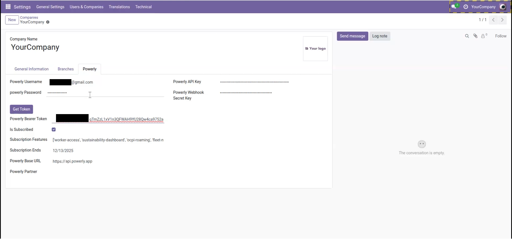
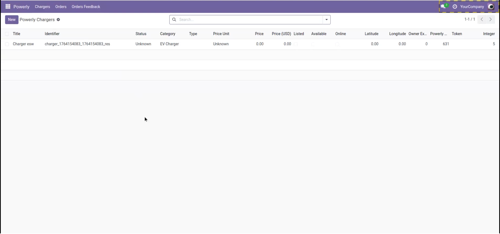
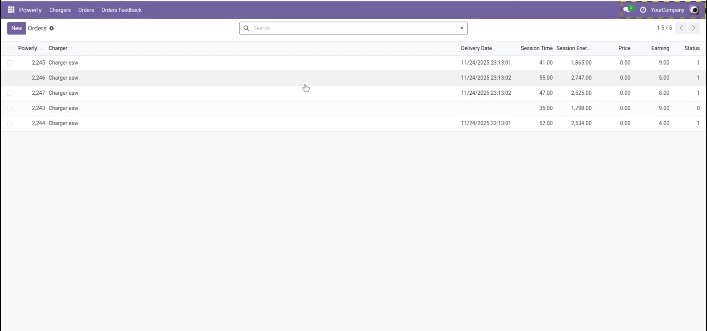

Connect Odoo with Powerly to synchronize EV chargers and selected charging operations data. The connector helps operators and businesses view key Powerly data inside Odoo for operational follow-up and accounting workflows.



Powerly documentation (including EV charger setup and platform features) is available at: powerly.app/docs